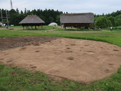 |
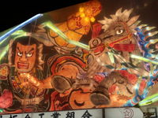 |
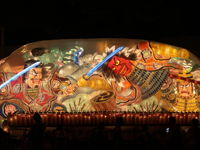 |
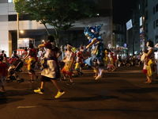 |
| Sannaimaruyama ruins | Nebuta 1 | Nebuta 2 | Nebuta 3 |
Before the trip, the whether broadcast said that the first day would be fine, the second and the third days would be cloudy with occasional rain, and the fourth day would be fine. I was really expecting Nebuta festival best and felt relieved to hear that.
If I could see Nebuta well, I would be satisfied at all the tour.
On the first day we had flight to Sendai and headed to Sendai train station to catch Shinkansen to Aomori.
At first we got to Sannaimaruyama ruins. There lived ancestor called Jomonjin before about 5500 to 4000 years.
In 2000 this site was designated as a Special National Historical Site of Japan. And many old residence were restored there. So we could see how our ancestor had lived home, in the huge area like a large park.
In the evening, fortunately I had seat in the front row and was just waiting for the starting of the festival.
It was cloudy but rather fine. When I first saw the Nebuta covered with vinyl I got really a shock.
I wondered why they were covered in spite of cloudy evening. Being disappointed with Nebuta, we watched them.
Although the cover made them lose the impact and reality, we could imagine the dynamism and had a good time.
People, the front and back of Nebuta, walked and took two steps on the one leg and soon took two steps on the other leg, saying "Rassera!, Rassera! ..."
Anyway we enjoyed them for an hour.
Then it began to sprinkle with rain and gradually it changed to heavy rain. Although we wore rain coats they were of no use for it.
It was a sham! At about 8:30 we left there, slightly before the festival was over.
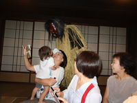 | 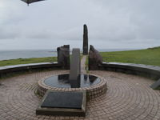 | 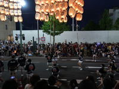 | 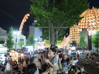 |
| Namahage | Nyudosaki Headland | Kando 1 | Kando 2 |
We visited Ojikamayama shrine and Namahage house, where we saw the show about Namahage and had experience a bit of it. Then we were at Nyudo headland and we stood at North latitude 40, the northernmost tip of the Ojika peninsula, where we could look out over the Japan Sea widely. It was occasionally rain.
I didn't expect that festival before coming. My image is that a bamboo rod with many lanterns just would be lifted up. It seemed to be a pity. However people got excited and had a fun, shouting "Dokoisho! Dokoisho! ...". Before I knew it, we were in the festival. My seat was prepared at the last of four stair seats, so we could see both side of performance on the two paralleled streets. The pole with 47 lanterns was held up on the shoulder, on the forehead or on the waist in serious balance. As the long bamboo sometimes made a big curve, which was dangerous and exciting, people raised a cry.
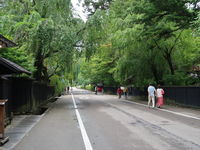 | 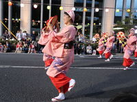 | 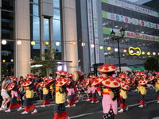 | 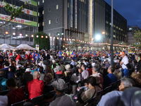 |
| Kakunodate | Hanagasa 1 | Hanagasa 2 | Hanagasa 3 |
It was cloudy by occasional fine weather.
However, the Mogami River descent, one of the main events, was canceled on account of a heavy rain.
Because a few parts of the river were more likely to overflow by previous concentrated heavy rain.
During the festival we didn't care of any rain.
We just had a fun for it.
It was something old-fashioned and made us nostalgic atmosphere.
We clapped our hands so as to follow the dance, sometimes saying yells, "Yasho-makase! Yasho-makase! ...".
We left for Kakunodate to see Samurai houses street of Edo era. Three years ago we had come here, and enjoyed this street and the river in the full bloom of cherry blossoms. The street had a lot of green leaves of trees and it was beautiful. But comparing summer with spring, cherry blossoms season was much more marvelous.
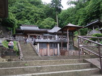 | 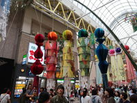 | 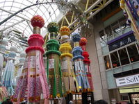 | 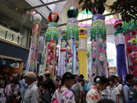 |
| Rikokuji Temple | Tanabata 1 | Tanabata 2 | Tanabata 3 |
We went to Ritusyakuji temple just called Mountain Temple, which was built in 860. We needed to climb up more than 1000 stone steps of steep stairs from the gate to the main temple. I was really exhausted but it was great feeling.
It was occasional light rain but Tanabata festival was held under the arcade. There I was surprised with many people walking and looking. Tanabatas were very beautiful and fantastic, and each of some were really colorful, complicated figure and sophisticated design.
I can not say about this trip "lucky or unlucky".
Most expected events were Nebuta and the boating trip of Mogami river. The first day, Nebuta was held but we got heavy rain. Furthermore the boat trip was canceled.
While, we could see Nebuta at good seats even for a short time, although it was covered with transparent sheets.
During Kanto and Hanagasa festivals we hadn't any rain. We could see Tanabata festival under the arcade in spite of light rain.
Speaking of food, we had various food in Tohoku, which were kiritanpo, Hinai-Jidori chicken, Inaniwa-udon, Taro-Imoni, Sasa-Kamaboko, Hotate, Yamagata beef, beef tongue. And I enjoyed eating them. I seemed that most of dishes were catered food and too much, so the taste was so so but not outstanding.
Anyway we enjoyed the trip and were pleased with it, though it was not perfect.
{kind=link}
{kind=link}
{kind=link}
{kind=link}
{kind=link}
{kind=link}
{kind=link}
{kind=link}
{kind=link}
{kind=link}
{kind=link}
{kind=link}
{kind=link}
{kind=link}
{kind=link}
{kind=link}